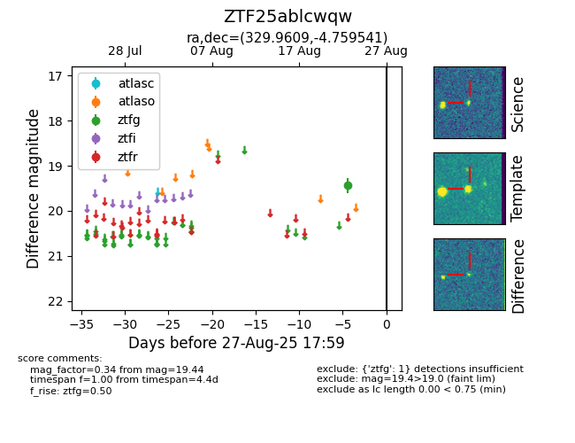

Target ZTF25ablcwqw at 2025-08-27 17:59, see:
FINK: fink-portal.org/ZTF25ablcwqw
Lasair: lasair-ztf.lsst.ac.uk/objects/ZTF25ablcwqw
ALeRCE: alerce.online/object/ZTF25ablcwqw
alt names
ZTF25ablcwqw (ztf,fink)
coordinates:
equatorial (ra, dec) = (329.9609,-4.75954)
galactic (l, b) = (53.8318,-43.43695)
photometry
last ztfg=19.44
1 ztfg detections
